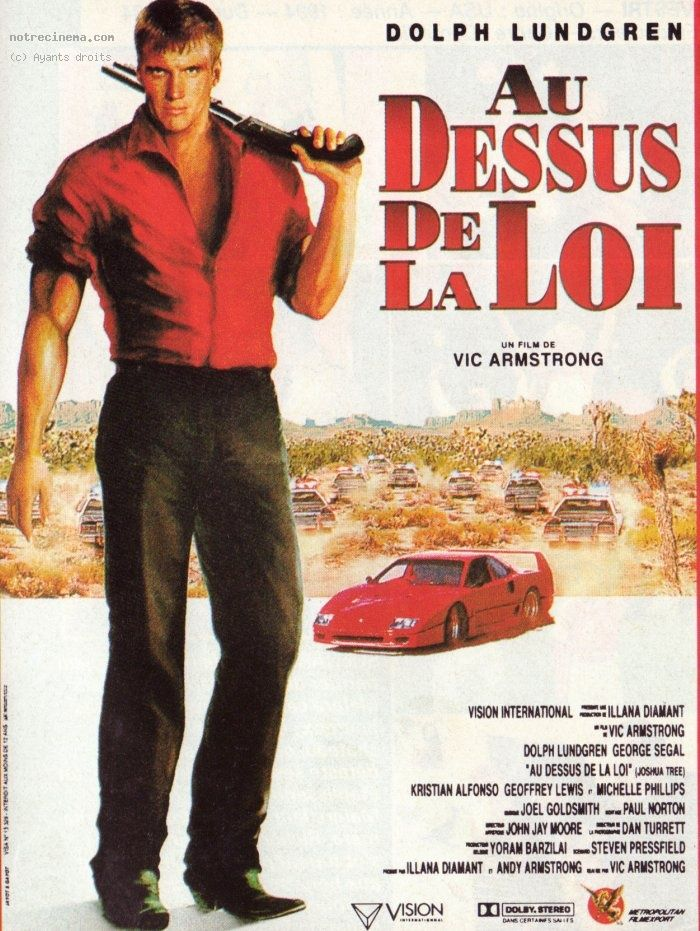
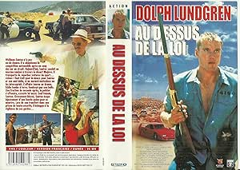
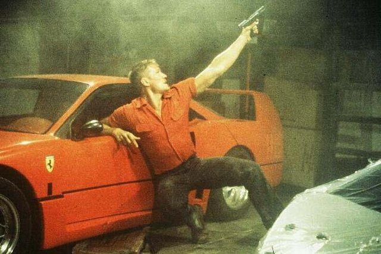

Mon grand-père enregistrait tout.
Des dizaines de cassettes captées depuis la télé, rangées dans des boîtiers achetés vides — chacun avec sa pochette découpée dans le programme Canal+, collée proprement à l'intérieur.
Sa cinémathèque à lui. Faite à la main.
J'en ai pris une au hasard dans le placard.
Sur la pochette, un visage que je reconnaissais.
Dolph Lundgren.
Je le connaissais depuis Universal Soldier. Je savais ce que ça voulait dire.
J'ai mis la cassette.
Ce soir, on la remet.

Joshua Tree.
1993. Réalisé par Vic Armstrong. Avec Dolph Lundgren et George Segal.
Vic Armstrong — cascadeur légendaire, doublure d'Harrison Ford pendant des années sur Indiana Jones et Star Wars. Joshua Tree est l'un de ses rares films derrière la caméra. Et ça s'entend dans chaque scène d'action.
Un film sorti directement en vidéo, englouti dans les bacs entre des dizaines de productions identiques.
Ce qu'on trouve à l'intérieur est plus propre que prévu. Plus tendu. Un homme seul dans un désert américain qui ne pardonne pas.
1993.
Le marché du direct-to-video est en pleine explosion. Les grandes chaînes de vidéoclubs américaines — Blockbuster en tête — absorbent des centaines de productions chaque année. C'est un territoire à part entière, avec ses propres règles, ses propres stars, ses propres codes.
Dolph Lundgren en est l'une des figures centrales.
Depuis Rocky IV en 1985, il traîne l'ombre de Ivan Drago comme un boulet. Les studios ne savent pas quoi faire de lui — trop grand, trop suédois, trop associé à un rôle de méchant soviétique pour être un héros américain crédible aux yeux du grand public.
Alors il construit son propre territoire. Film après film, budget après budget, il devient la star du marché vidéo que Hollywood ne voulait pas faire de lui.
Joshua Tree est l'un de ces films. Vic Armstrong aux commandes — un homme qui a passé vingt ans à construire des séquences d'action impossibles pour les plus grands — et un Lundgren qui porte le film seul, sans filet.

Wellman Santee était pilote de course.
Un homme qui a connu la vitesse, l'adrénaline, les circuits. Puis un coup dur — et une chute. Contraint de conduire des camions pour survivre, sans savoir que les voitures qu'il transporte sont volées.
Jusqu'au jour où un réseau de flics corrompus décide de lui faire porter le chapeau d'un meurtre qu'il n'a pas commis.
Un homme piégé deux fois. Par ceux qui l'ont utilisé sans lui dire la vérité. Et par ceux qui ont décidé de sa culpabilité avant même de l'entendre.
Ce qui aurait pu être un thriller d'action générique devient une longue traque à travers le désert californien — des routes interminables, des motels miteux, un homme seul contre une machine qui a déjà rendu son verdict.
La séquence dans le hangar vous dira tout ce que vous avez besoin de savoir.
Ce film aurait pu être n'importe quel film d'action direct-to-video de 1993.
Il ne l'est pas.
La différence tient à deux choses.
La première c'est Lundgren. Pas le Lundgren qu'on attend. Pas Ivan Drago, pas la machine invincible. Ici il joue un homme qui a déjà perdu — un pilote de course tombé de son piédestal, contraint à la survie, accusé d'un crime qu'il n'a pas commis. Cette fragilité sous la carrure change tout. On croit à sa course. On croit que les choses peuvent mal tourner.
La deuxième c'est Vic Armstrong derrière la caméra. Vingt ans à construire des séquences d'action impossibles pour les plus grands films du monde — et cette expérience se voit dans chaque découpage, chaque cascade, chaque poursuite. Joshua Tree n'a pas le budget d'Indiana Jones. Mais il en a l'intelligence mécanique.
La séquence dans le hangar en est la preuve absolue. Pas d'effets spéciaux. Pas d'explosions numériques. Juste un homme qui sait exactement où placer la caméra — et ça suffit.
C'est rare. Même dans les grands films.

1993 est une année cruelle pour les films comme Joshua Tree.
Le marché direct-to-video est saturé. Blockbuster reçoit des centaines de nouvelles cassettes chaque semaine — des thrillers d'action, des polars urbains, des films d'arts martiaux. Tout se ressemble. Tout s'entasse. Tout disparaît à la même vitesse.
Joshua Tree n'a pas eu de sortie en salle pour se distinguer. Pas de campagne marketing pour le sortir du lot. Pas de critique pour signaler qu'il méritait mieux que le rayon action du bas de l'étagère.
Et puis il y a le problème Lundgren. En 1993, son nom sur une jaquette VHS signifie quelque chose de précis pour le public — de l'action musclée, du spectacle simple, pas de surprises. Les gens qui auraient aimé ce film ne l'ont pas cherché parce qu'ils ne s'attendaient pas à le trouver là.
C'est le paradoxe cruel du direct-to-video : la distribution qui permet au film d'exister est exactement ce qui l'empêche d'être vu.
Parce que Joshua Tree est la preuve que le direct-to-video n'était pas une poubelle.
C'était un territoire. Avec ses propres règles, ses propres exigences, ses propres réussites. Et parfois, quand les planètes s'alignaient — un réalisateur qui savait ce qu'il faisait, un acteur qui avait quelque chose à prouver, un script qui tenait la route — il en sortait quelque chose de solide.
Joshua Tree est ce quelque chose.
Vic Armstrong n'avait pas besoin de faire ce film. Il avait déjà tout prouvé sur les plus grands plateaux du monde. Il l'a fait quand même, avec la même rigueur, la même précision, le même respect du travail bien fait.
Et Lundgren — qu'on a enfermé pendant des années dans le rôle du colosse sans âme — montre ici qu'il était capable de bien plus. Un homme vulnérable, traqué, injustement accusé. Pas un monstre. Un homme.
C'est pour ça qu'on rembobine.
Joshua Tree n'est pas un chef-d'œuvre.
C'est mieux que ça.
C'est un film honnête, construit avec soin par des gens qui prenaient leur travail au sérieux — même sans budget, même sans distribution, même sans personne pour le remarquer.
Mon grand-père l'avait remarqué, lui. Il avait découpé la photo. Acheté le boîtier. Collé la pochette. Rangé la cassette.
Il savait reconnaître quelque chose qui valait la peine d'être gardé.
Ce soir, on lui donne raison.
La cassette est dans le lecteur. On rembobine.
Titre original
Army of One
Pays
États-Unis
Genre
Action / Thriller
Distribution
Direct-to-video
Avec aussi
Kristian Alfonso · Geoffrey Lewis
Fil conducteur
Dolph Lundgren — Saison 1
Regarder l'épisode
SOMEDAY — EP. 02